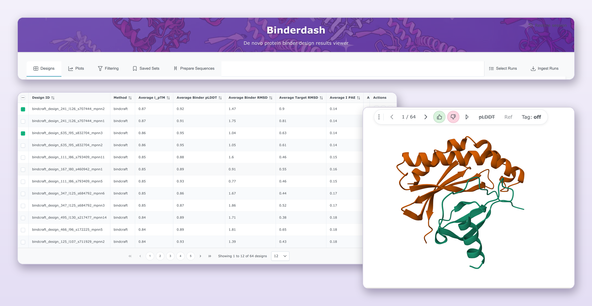

Binderdash¶

Binderdash is a tool to streamline filtering, ranking and construct design for de novo protein binders.
Point it at the output folders from your design runs and it presents the scores and structures in one interface. Filter, rank and export ready-to-order DNA constructs.
Features¶
- Reads your runs as they are. Supports run output folders from RFdiffusion, RFdiffusion3, BindCraft and BoltzGen. Binderdash detects
nf-binder-designpipeline outputs and imports with no reformatting needed. - One table across runs and methods. Sort and compare designs from different runs side by side. Common metrics (ipTM, interface PAE, RMSD, pLDDT) are matched across pipelines that name them differently.
- 3D structure viewer. Built on Mol*. Step through designs, colour by chain or pLDDT, overlay a reference structure, and mark designs as good or bad as you go.
- Filtering and ranking. Combine score thresholds with target-contact conditions (for example "binds within 5 Å of these epitope residues"), rank on several metrics at once, and pick a shortlist that balances score against sequence diversity. The filter cascade UI shows how many designs each condition removes. See Filtering and ranking.
- Plots. Scatterplots and histograms of any two metrics against each other.
- Saved sets. Keep a shortlist together with the filters and ranking that produced it, and come back to it later.
- Construct design. Add N- or C-terminal affinity tags and linkers (His, FLAG, Strep-tag II, AviTag and others) and codon-optimise with synthesis complexity constraints, including GC content, hairpins and restriction sites. Generate short names compatible with DNA synthesis vendors naming rules. Export Twist-ready CSVs.
- Reproducible downloads. A design bundle holds the structures, sequences and tables together with the selections, filters and settings that produced them, so a shortlist can be traced and restored later.
- Bring your own data. Upload a TSV of extra columns (for example lab results) and merge it onto designs by ID to use for filtering and ranking.
- Desktop or shared server. Run it on your own machine, or host one instance for a group with sign-in (local accounts, Unix/PAM or Google), per-user API keys, and an optional MCP endpoint and REST API for AI agents.
Getting started¶
- Desktop app: download a build for Linux, macOS or Windows from the latest release. Best for one person exploring runs on their own machine.
- Server with Docker: host one instance for a group, with HTTPS and sign-in.
For developers¶
- Development setup: run from source, tests, and building these docs
- REST API and MCP server
- Adding a pipeline method type
Source code, issues and releases are on GitHub.